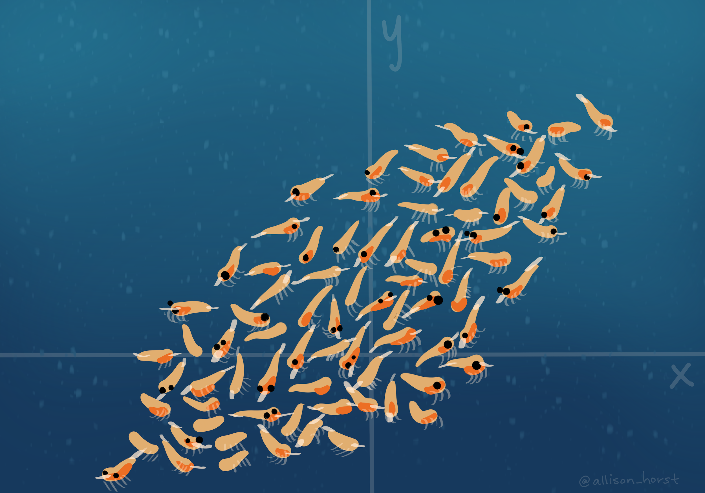
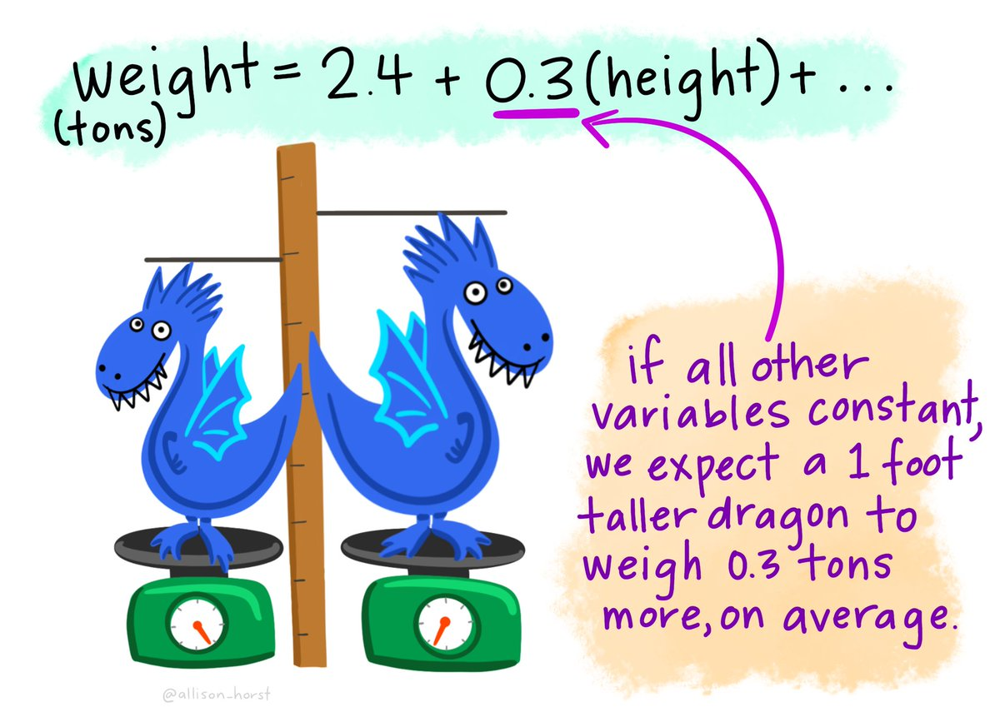
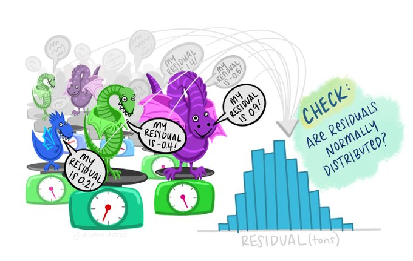
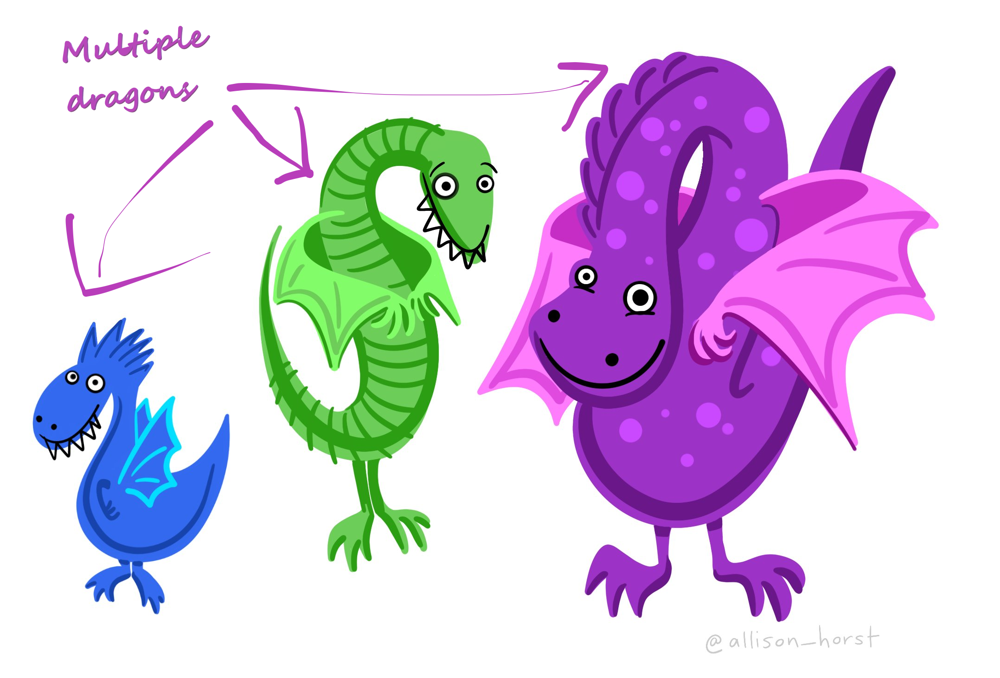
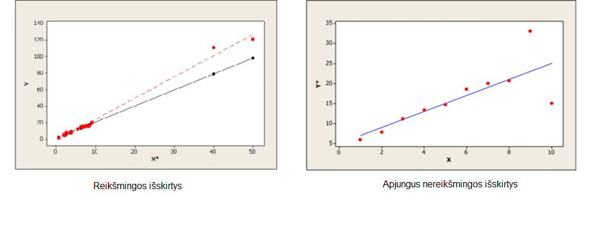
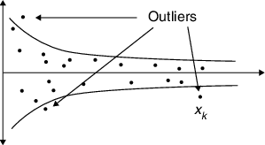
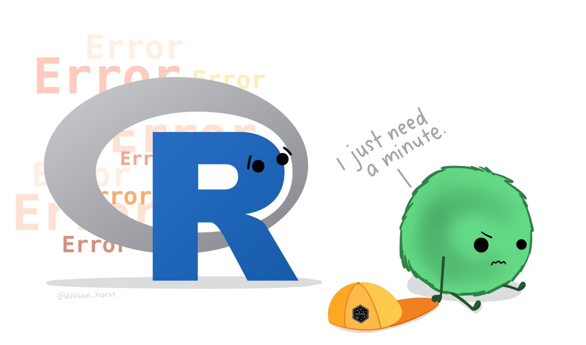

Įžanga

Šioje platformoje rasite mokymų medžiagą Lietuvos Statistikos
departamento viduje organizuojamiems mokymams, skirtiems tikslinėms
darbuotojų grupėms. Vienas pagrindinių šių mokymų siekių – platinti
Lietuvos Statistikos darbuotojų žinias ir gebėjimus atlikti statistinių
duomenų tinkamumo patvirtinimą, redagavimą, praleistų reikšmių įrašymą
naudojantis R programavimo kalba.
Teorinė mokymų medžiaga jau
yra parengta skaidrių pavidalu. Šioje platformoje turite galimybę
mokytis savarankiškai – peržiūrėti parengtą mokymų medžiagą, atlikti
praktines užduotis.
Trečiojoje mokymų dalyje pateikiama
naudinga informacija apie:
- Pirsono koreliaciją: ir kaip ją apskaičiuoti
pašalinus išskirtis.
- Tiesinės regresijos modeliavimą: kaip jį atlikti ir
patikrinti statistinį reikšmingumą.
- Tiesinės regresijos modelio prielaidas: bei Kuko
matą.
- Daugialypės regresijos modeliavimą: kaip jį atlikti
ir patikrinti statistinį reikšmingumą.
- Pasirinktinio redagavimo metodą: ir kaip jį
apskaičiuoti naudojantis R.
- Hidiroglou-Berthelot metodą: ir kaip jį
apskaičiuoti naudojantis R.
Kaip tai veikia?
Rasite klausimų su atsakymų variantais:
Rasite klausimų, kuriuose reikalinga išrikiuoti atsakymus pagal tam tikrą eilę:
Taip pat, dirbsite su R, kur programavimo kodas veiks lyg dirbant
tiesiogiai programoje. Paspauskite Ctr+Enter arba
Vykdyti kodą mygtuką, kad įvykdytumėte programą.

2+2Jeigu nerandate tinkamo atsakymo kodo langelyje, galite pasinaudoti
Užuomina , arba pasitikrinti atsakymą
Atsakymas mygtuku.
Nepamirškite pateikti atsakymo
paspausdami Pateikti atsakymą mygtuką, kur gausite
išsamesnį komentarą apie savo kodą anglų kalba.

2+2==5Ar suma teisinga?2+2==4Taip pat, prieš pradedant mokymus, svarbu nuspausti mygtuką
Perkrauti (kaip pažymėta paveikslėlyje). Tai užtikrina, kad
užduotys yra vykdomos nuo pradžių. Šį mygtuką galite naudoti kaskart,
kai norite perkrauti mokymų medžiagą ir ją įvykdyti iš naujo.

Iliustracijos
Å i mokymų platforma iliustruota paveikslėliais, kuriuos galite rasti šiuo adresu. Naudojant šias iliustracijas, cituokite jas taip: “Artwork by @allison_horstâ€.
Sėkmės!
1. Pirsono koreliacijos koeficientas

Pirsono koreliacijos koeficientas geriausiai įvertina tiesinę kintamųjų priklausomybę, kai yra patenkinta prielaida apie tų kintamųjų normalumą, tačiau praktikoje jis skaičiuojamas ir tada, kai kintamieji nėra pasiskirstę normaliai.
Į sistemą tebėra importuota duomenų lentelė pavadinimu
duomenys iš praėjusiojo mokymų bloko.
Kintamieji:
kodas9: įmonės kodasevrk2: įmonės ekonominės veiklos rÅ«Å¡ies kodasimtis: patekimo į imtį indikatoriusviso: bendra ataskaitinio laikotarpio įmonės apyvartaval: visos ataskaitinį laikotarpį dirbtos įmonės darbuotojų valandosviso_prm_ket: bendra praeitų metų atitinkamo laikotarpio įmonės apyvartaviso_pr_ket: bendra praeito laikotarpio įmonės apyvartapvm: įmonės apyvarta pagal PVM ataskaitų duomenisDSK: vidutinis ataskaitinio laikotarpio įmonės darbuotojų skaičius
1.1. Apskaičiuokite Pirsono (“Pearsonâ€) koreliacijos koeficientą
tarp duomenys$pvm ir duomenys$viso
naudodamiesi cor() funkcija.
cor(___$___, ___$___, method = "___", use = "pairwise.complete.obs")Nepamirškite po kintamųjų įvesti metodą, t.y. method = "pearson".cor(duomenys$pvm, duomenys$viso, method = "pearson", use = "pairwise.complete.obs")1.2. Įvykdykite žemiau nurodytus veiksmus
1. Pašalinkite išskirtispvm ir
viso stulpeliuose su žemiau nurodytu kodu (realioje
situacijoje tokias išskirtis reikėtų pažymėti tikrinimui) (1 ir
2 kodo eilutės).2. Vizualiai patikrinkite, ar tebėra išsiskiriančių reikšmių. (3 kodo eilutė)
duomenys <- duomenys[-c(which.max(duomenys$___)),]
duomenys <- duomenys[-c(which.max(duomenys$___)),]
plot(duomenys[,c("___","___")], ylab = "Statistinio tyrimo apyvarta", xlab = "PVM apyvarta")duomenys <- duomenys[-c(which.max(duomenys$pvm)),]
duomenys <- duomenys[-c(which.max(duomenys$viso)),]
plot(duomenys[,c("pvm","viso")], ylab = "Statistinio tyrimo apyvarta", xlab = "PVM apyvarta")3. Apskaičiuokite Pirsono koreliacijos koeficientą
tarp pvm ir viso dar kartą. (4 kodo
eilutė)
cor(___$___, ___$___, method = "___", use = "pairwise.complete.obs")cor(duomenys$pvm, duomenys$viso, method = "pearson", use = "pairwise.complete.obs")1.3. Koks buvo 1.2. Pirsono koreliacijos koeficientas po išskirčių pašalinimo?
Jei turime mažai stebinių arba turime ranginius kintamuosius, siūloma
taikyti Spirmeno (Spearman) koreliacijos koeficiento įvertį \(r_{s}(x,y)\).
Spirmano koreliacijos
koeficientas skaičiuojamas pakeičiant method funkciją iš
pearson į spearman.
Tiesa, nepamirškime, kad pasitaiko ir klaidingų
koreliacijų:
{kind=link}

2. Tiesinės regresijos modelis

Koreliacinė analizė parodo, ar dviejų kintamųjų reikšmės yra susijusios ir koks tos sąsajos stiprumas. Jei šito užtenka, šioje vietoje analizę ir baigiame. Jei norime geriau suprasti šią sąsają, galime atlikti regresinę analizę. Regresijos modelis – statistinis modelis, leidžiantis vieno kintamojo reikšmes prognozuoti pagal kito kintamojo reikšmes. Tiesinės regresijos modelis yra: \[𝑌_𝑖=𝑎+𝑏𝑥_𝑖+𝑒_𝑖\]
2.1. Sudarykite tiesinės regresijos modelį viso bei
pvm kintamiesiems naudodamiesi lm()
funkcija.
Modelis <- __(viso ~ pvm, data = duomenys)
summary(___)Nepamirškite naudotis 'summary()' funkcija, kad patikrintumėte 'Modelis' rezultatą.Modelis <- lm(viso ~ pvm, data = duomenys)
summary(Modelis)Kaip vienas iš regresijos modelio tinkamumo rodiklių - plačiai naudojamas determinacijos koeficientas \(r^2\). Paprastosios tiesinės regresijos atveju jis sutampa su Pirsono koreliacijos koeficientu, pakeltu kvadratu. Praktiškai taikant regresinę analizę, dažniausiai reikalaujama, kad \(𝑟^2\)≥0,25.
2.2. Ar, nepašalinus išskirčių, determinacijos koeficientas \(r^2\) 2.1. modelyje yra didesnis nei arba lygus 0.25?
3. Tiesinės regresijos modelio prielaidos

3.1. Pažymėkite 4 pagrindines tiesinės regresijos modelio prielaidas.
3.2. Dar kartą sudarykite tiesinės regresijos modelį
viso bei val kintamiesiems ir apskaičiuokite
Kuko matą naudodamiesi funcija cookplot().
Kuko matas parodo ar duomenyse yra išskirčių. Kai Kuko
matas \(>1\), atitinkantis stebinys
- išskirtis.
cookplot(lm(___ ~ ___, data = duomenys), labels = labels_kuko)Dažniausiai išskirtimi laikomas stebinys, kurio Kuko reikšmė didesnė nei 1.cookplot(lm(viso ~ val, data = duomenys), labels = labels_kuko)3.3. Kuo rėmėtės spręsdami apie 3.2. pažymėtas išsiskiriančias reikšmes?
4. Daugialypės regresijos modelis

Tiesinės daugialypės regresijos modelis yra tiesinės regresijos modelio apibendrinimas, kai nepriklausomų intervalinių kintamųjų yra daugiau nei vienas.
4.1. Sudarykite daugialypės regresijos modelį prognozuodami
viso reikšmę pagal pvm ir val
reikšmes.
DaugialypisModelis <- lm(___ ~ ___ + ___, data = duomenys)Nepamirškite naudotis 'summary()' funkcija, kad patikrintumėte 'DaugialypisModelis' rezultatą.DaugialypisModelis <- lm(viso ~ pvm + val, data = duomenys)
summary(DaugialypisModelis)5. Pasirinktinio redagavimo metodas
Pasirinktinis redagavimas (angl. Selective
Editing) yra paremtas idėja ieškoti tik reikšmingų klaidų duomenyse,
taip sutaupant laiko ir žmogiškųjų išteklių bei išlaikant siektiną
įverčių tikslumą. Metodui taikyti naudojama statistinio paketo R
biblioteka â€SeleMix“.

Naudokite kitą duomenų lentelę pavadinimu duomenys1, jau
importuota į sistemą.
Kintamieji:
kodas9: įmonės kodasvs2: grupės kodasimtis: patekimo į imtį indikatoriusviso_m1: ataskaitinio laikotarpio įmonės apyvarta pirmą mėnesįviso_m2: ataskaitinio laikotarpio įmonės apyvarta antrą mėnesįviso_m3: ataskaitinio laikotarpio įmonės apyvarta trečią mėnesįviso: visos ataskaitinį laikotarpį dirbtos įmonės darbuotojų valandosval: valandų skaičiusviso_prm_ket: bendra praeitų metų atitinkamo laikotarpio įmonės apyvartaviso_pr_ket: bendra praeito laikotarpio įmonės apyvartapvm1: ataskaitinio laikotarpio įmonės pvm pirmą mėnesįpvm2: ataskaitinio laikotarpio įmonės pvm antrą mėnesįpvm3: ataskaitinio laikotarpio įmonės pvm trečią mėnesįpvm: įmonės apyvarta pagal PVM ataskaitų duomenisDSK: vidutinis ataskaitinio laikotarpio įmonės darbuotojų skaičius
5.1. Patikrinkite, ar duomenys1 atitinka aukščiau
nurodytus kintamųjų pavadinimus su funkcija names().
duomenys1names(duomenys1)Pasirinktinio redagavimo metodu ieškosime reikšmingų klaidų
viso apyvartos duomenyse.
5.2. Atidžiai peržiūrėkite pasirinktinio redagavimo kodą. Sekite,
kur paliktos tuščios vietos, jas užpildykite
(Kodo vykdymas
gali užtrukti porą minučių).
duom <- duomenys1[complete.cases(duomenys1$___) & complete.cases(duomenys1$pvm),]# `pvm` bei `viso` kintamiesiems atrinkite įrašus be praleistų reikšmių; išsaugokite naujus duomenis pavadinimu `duom`
duom <- duom[duom$pvm > 0 & duom$___ > 0,]# `pvm` bei `viso` kintamiesiems atrinkite įrašus didesnius už 0 (**2 eilutė**); išsaugokite naujus duomenis pavadinimu `duom`
# Suraskite kiekvienos veiklos įmonių skaičių
nrow_f <- function(df) length(df$viso)
nrow_df <- ddply(duom, .(vs2), nrow_f)
duom <- merge(duom, nrow_df, by = "vs2")
names(duom)
# Matematinis metodas bus taikomas veiklų grupėms, kuriose yra bent 5 įmonės;
nepateke1 <- duom[duom$V1 < 5,] # Nepatekusios įmonės išsaugomos atskirai pavadinimu `nepateke1`
nepateke1 <- nepateke1[,c(2,1,3:ncol(nepateke1))]
duom <- duom[duom$V1 >= 5,] # Patekusios įmonės toliau išsaugomos `duom`
names(nepateke1)[ncol(nepateke1)] <- "________" # Pabrauktose vietose, pervadinkite paskutinį stulpelį į "grupes_dydis"
names(duom)[ncol(duom)] <- "_________" # Pabrauktose vietose, pervadinkite paskutinį stulpelį į "grupes_dydis"
#-----KIEKVIENOS VEIKLOS T.SEL PARAMETRAS-----
library("dplyr")
library("SeleMix")
band <- function(duom) {
# Didžiausio tikėtinumo metodu įvertinami užterštų duomenų modelio parametrai ir
# pateikiami modelio tinkamumo rodikliai:
est1 <- ml.est(y = duom$viso, x = duom$pvm, eps = 0.1)
const <- 0
for (i in seq(from = 0, to = 1, by = 0.001)) {
SEi <- i # tikslumo lygmuo
# Skaičiuojamos score funkcijų reikšmės ir išskiriamos galimai reikšmingos klaidos:
sel1 <- as.data.frame(sel.edit(y = duom$viso, ypred = est1$ypred, t.sel = SEi))
SelEdit <- sel1$sel
SE <- sum(SelEdit) # galimai reikšmingų klaidų skaičius
proc <- round(SE/length(duom$viso)*100, digits = 2) # galimai reikšmingų klaidų procentinė dalis
const <- rbind(const, data.frame(SEi, SE, proc)) # klaidų sk. kiekvienam tikslumo lygmeniui
}
rib <- filter(const, const$SE > 1)
t.sel <- max(rib$SEi) # išrenkamas didžiausias tikslumo lygmuo, su kuriuo dar randama reikšmingų klaidų
ribos <- data.frame(duom$vs2, t.sel) # didžiausias tikslumo lygmuo kiekvienai veiklai
}
ribos2 <- do.call(rbind, by(duom, duom$vs2, band))
t_sel_pvm <- data.frame(veikla = ribos2$duom.vs2, t.sel = ifelse(ribos2$t.sel == 0, 0.001, ribos2$t.sel))
t_sel_pvm <- data.frame(unique(t_sel_pvm))
#-----SKAIČIAVIMAI-----
DUOM <- 0
est1 <- 0
sel1 <- 0
issk <- 0
issk2 <- 0
for(i in 1:nrow(t_sel_pvm)) {
DUOM[i] = list(subset(duom, duom$vs2 == t_sel_pvm$veikla[i]))
est1[i] = ml.est(y = DUOM[[i]][,"viso"], x = DUOM[[i]][,"pvm"], eps = 0.1)
sel1[i] = list(sel.edit(y = DUOM[[i]][,"viso"], ypred = est1[[i]][,1], t.sel = t_sel_pvm[,"t.sel"][i])[,9])
issk[i] = list(data.frame(DUOM[[i]], t_sel_pvm$t.sel[i], sel_editing1 = sel1[[i]]))
}
isskirtys_pvm <- do.call(rbind.data.frame, issk)
isskirtys_pvm$skirt_pm = round((1-(isskirtys_pvm$pvm/isskirtys_pvm$viso))*100, 1)duom <- duomenys1[complete.cases(duomenys1$pvm) & complete.cases(duomenys1$viso),]
duom <- duom[duom$pvm > 0 & duom$viso > 0,]
nrow_f <- function(df) length(df$viso)
nrow_df <- ddply(duom, .(vs2), nrow_f)
duom <- merge(duom, nrow_df, by = "vs2")
names(duom)
nepateke1 <- duom[duom$V1 < 5,]
nepateke1 <- nepateke1[,c(2,1,3:ncol(nepateke1))]
names(nepateke1)[ncol(nepateke1)] <- "Grupes_dydis"
duom <- duom[duom$V1 >= 5,]
names(duom)[ncol(duom)] <- "Grupes_dydis"
#-----KIEKVIENOS VEIKLOS T.SEL PARAMETRAS-----
library("dplyr")
band <- function(duom) {
# Didžiausio tikėtinumo metodu įvertinami užterštų duomenų modelio parametrai ir
# pateikiami modelio tinkamumo rodikliai:
est1 <- ml.est(y = duom$viso, x = duom$pvm, eps = 0.1)
const <- 0
for (i in seq(from = 0, to = 1, by = 0.001)) {
SEi <- i # tikslumo lygmuo
# Skaičiuojamos score funkcijų reikšmės ir išskiriamos galimai reikšmingos klaidos:
sel1 <- as.data.frame(sel.edit(y = duom$viso, ypred = est1$ypred, t.sel = SEi))
SelEdit <- sel1$sel
SE <- sum(SelEdit) # galimai reikšmingų klaidų skaičius
proc <- round(SE/length(duom$viso)*100, digits = 2) # galimai reikšmingų klaidų procentinė dalis
const <- rbind(const, data.frame(SEi, SE, proc)) # klaidų sk. kiekvienam tikslumo lygmeniui
}
rib <- filter(const, const$SE > 1)
t.sel <- max(rib$SEi) # išrenkamas didžiausias tikslumo lygmuo, su kuriuo dar randama reikšmingų klaidų
ribos <- data.frame(duom$vs2, t.sel) # didžiausias tikslumo lygmuo kiekvienai veiklai
}
ribos2 <- do.call(rbind, by(duom, duom$vs2, band))
t_sel_pvm <- data.frame(veikla = ribos2$duom.vs2, t.sel = ifelse(ribos2$t.sel == 0, 0.001, ribos2$t.sel))
t_sel_pvm <- data.frame(unique(t_sel_pvm))
#-----SKAIČIAVIMAI-----
DUOM <- 0
est1 <- 0
sel1 <- 0
issk <- 0
issk2 <- 0
for(i in 1:nrow(t_sel_pvm)) {
DUOM[i] = list(subset(duom, duom$vs2 == t_sel_pvm$veikla[i]))
est1[i] = ml.est(y = DUOM[[i]][,"viso"], x = DUOM[[i]][,"pvm"], eps = 0.1)
sel1[i] = list(sel.edit(y = DUOM[[i]][,"viso"], ypred = est1[[i]][,1], t.sel = t_sel_pvm[,"t.sel"][i])[,9])
issk[i] = list(data.frame(DUOM[[i]], t_sel_pvm$t.sel[i], sel_editing1 = sel1[[i]]))
}
isskirtys_pvm <- do.call(rbind.data.frame, issk)
isskirtys_pvm$skirt_pm = round((1-(isskirtys_pvm$pvm/isskirtys_pvm$viso))*100, 1)5.3. Pasinaudokite žemiau esančiu kodo langeliu, kad apskaičiuotumėte kiek išskirčių buvo nustatyta pasirinktinio redagavimo metodu.
___(isskirtys_pvm$sel_editing1)Galite pasinaudoti funkcija count().count(isskirtys_pvm$sel_editing1)6. Hidiroglou-Berthelot metodas

Hidiroglou-Berthelot
metodas buvo pasiūlytas M.A.Hidiroglou ir J. M. Bertheloto (1986)
periodiniams verslo statistiniams tyrimams.
Žemiau pateikiamas kodas Hidiroglou-Berthelot metodui,
taikytinas įmonių apyvartos išskirtims nustatyti. Skaičiuosime išskirtis
viso kintamajam.
6.1. Atidžiai peržiūrėkite kodą. Sekite, kur paliktos tuščios vietos, jas užpildykite.
# Pirmiausia, atrenkami įrašai be praleistų reikšmių ir didesni už 0
duom <- duomenys1[complete.cases(duomenys1$viso_prm_ket) & complete.cases(duomenys1$viso),]
duom <- duom[duom$viso_prm_ket > 0 & duom$viso > 0,]
# Surandamas kiekvienos veiklos įmonių skaičius pagal jų veiklos sritį
nrow_f <- function(df) length(df$viso)
nrow_df <- ddply(duom, .(vs2), nrow_f)
duom <- merge(duom, nrow_df, by = "vs2")
# Pagal straipsnyje pateikiamas rekomendacijas, veiklų grupės, kuriose yra mažiau nei 3 įmonės - pašalinamos, kitos - įrašomos kaip `duom`.
nepateke2 <- duom[duom$V1 < 3,]
duom <- duom[duom$V1 >= 3,]
# Pabrauktose vietose, pervadinkite paskutinį stulpelį į "grupes_dydis"
names(nepateke2)[ncol(nepateke2)] <- "______"
names(duom)[ncol(duom)] <- "______"
#----------------KIEKVIENOS VEIKLOS C PARAMETRAS--------------------------------
# Žemiau pateikta funkcija apibrėžia Hidiroglou-Berthelot metodą mūsų turimiems duomenims.
HidBer <- function(duom) {
const1 <- 0
ataskaitinis <- duom$viso # ataskaitiniai duomenys
ankstesnis <- duom$viso_prm_ket # istoriniai duomenys
u <- ___ # apibrėžkite 'u' konstantą 0.4
A <- ___ # apibrėžkite 'A' konstantą kaip apraašyta mokymų skaidrėse (Hidiroglou-Berthelot metodas (IV)
for (i in 1:500) {
R <- ataskaitinis/ankstesnis # Kiekvienam stebimam populiacijos elementui 𑖠apibrėžiame individualų santykinį pokytį
m <- median(R) # Tegu $𝑅_𝑀$ – santykinių pokyčių $𝑅_𝑖$ mediana
S <- ifelse(R > 0 & R < m, (1-(m/R)), ifelse(R >= m, ((R/m)-1), 0)) # Taikoma $𝑅_𝑖4 transformacija
E <- S*(max(ataskaitinis, ankstesnis)^u)
Em <- median(E)
Eq1 <- quantile(E, prob = 0.25, type = 2)
Eq3 <- quantile(E, prob = 0.75, type = 2)
Dq1 <- max(Em-Eq1, abs(A*Em))
Dq3 <- max(Eq3-Em, abs(A*Em))
C <- i
ap_r <- Em-C*Dq1
virs_r <- Em+C*Dq3
H_B1 <- data.frame(HB = ifelse(E < ap_r | E > virs_r, 1, 0))
HB <- sum(H_B1$HB) # išskirčių skaičius
proc <- round(HB/length(ankstesnis)*100, digits = 2) # išskirčių procentinė dalis
const1 = rbind(const1, data.frame(C, HB, proc)) # išskirčių skaičius skirtingiems C
}
# rib1 <- filter(const1, const1$proc < 10 & const1$proc > 5) # išskirčių proc. dalis tarp 5 ir 10
rib1 <- const1[const1$proc < 10 & const1$proc > 5,] # išskirčių proc. dalis tarp 5 ir 10
c <- max(rib1$C) # išrenkamas didžiausias C, su kuriuo dar randama reikšmingų klaidų
ribos_hb <- data.frame(duom$vs2, c) # didžiausias C kiekvienai veiklai
}
ribos_HB <- do.call(rbind, by(duom, duom$vs2, HidBer))
# c_aut <- filter(ribos_HB, ribos_HB$c > 0)
c_aut <- ribos_HB[ribos_HB$c > 0,] # c mediana - pasisalini kurios lygios nuliui
aut <- median(c_aut$c)
C <- data.frame(veikla = ribos_HB$duom.vs2, C = ifelse(ribos_HB$c == '-Inf', aut, ribos_HB$c))
C <- data.frame(unique(C))
#-----SKAIČIAVIMAI-----
DUOM2 <- 0
ataskaitinis <- 0
ankstesnis <- 0
R <- 0
m <- 0
S <- 0
E <- 0
Em <- 0
Eq1 <- 0
Eq3 <- 0
Dq1 <- 0
Dq3 <- 0
C_p <- 0
ap_r <- 0
virs_r <- 0
H_B1 <- 0
u <- 0.4
A <- 0.05
for (i in 1:nrow(C)) {
DUOM2[i] = list(subset(duom, duom$vs2 == C$veikla[i]))
ataskaitinis[i] <- list(DUOM2[[i]][,"viso"])
ankstesnis[i] <- list(DUOM2[[i]][,"viso_prm_ket"])
R[i] <- list(ataskaitinis[[i]]/ankstesnis[[i]])
m[i] <- list(median(R[[i]]))
S[i] <- list(ifelse(R[[i]] > 0 & R[[i]] < m[[i]], (1-(m[[i]]/R[[i]])),
ifelse(R[[i]] >= m[[i]], ((R[[i]]/m[[i]])-1), 0)))
E[i] <- list(S[[i]]*(max(ataskaitinis[[i]], ankstesnis[[i]])^u))
Em[i] <- list(median(E[[i]]))
Eq1[i] <- list(quantile(E[[i]], prob = 0.25, type = 2))
Eq3[i] <- list(quantile(E[[i]], prob = 0.75, type = 2))
Dq1[i] <- list(max(Em[[i]]-Eq1[[i]], abs(A*Em[[i]])))
Dq3[i] <- list(max(Eq3[[i]]-Em[[i]], abs(A*Em[[i]])))
C_p[i] <- C[,"C"][i]
ap_r[i] <- list(Em[[i]]-C_p[[i]]*Dq1[[i]])
virs_r[i] <- list(Em[[i]]+C_p[[i]]*Dq3[[i]])
H_B1[i] <- list(data.frame(DUOM2[[i]], C = C_p[[i]], HB = ifelse(E[[i]] < ap_r[[i]] | E[[i]] > virs_r[[i]], 1, 0)))
}
isskirtys_HB1 <- do.call(rbind.data.frame, H_B1)
isskirtys_HB1$skirt_HB1 = round((1-(isskirtys_HB1$viso_prm_ket/isskirtys_HB1$viso))*100, 1)
count(isskirtys_HB1$HB)Nepamirškite įrašyti visas praleistas reikšmes, įskaitant u = 0.4, A = 0.05 (kaip nurodyta mokymų skaidrėse).# Atrenkami įrašai be praleistų reikšmių ir didesni už 0
duom <- duomenys1[complete.cases(duomenys1$viso_prm_ket) & complete.cases(duomenys1$viso),]
duom <- duom[duom$viso_prm_ket > 0 & duom$viso > 0,]
# Surandamas kiekvienos veiklos įmonių skaičius
#pagal veikla
nrow_f <- function(df) length(df$viso)
nrow_df <- ddply(duom, .(vs2), nrow_f)
duom <- merge(duom, nrow_df, by = "vs2")
# Matematinis metodas bus taikomas veiklų grupėms, kuriose yra bent 3 įmonės
nepateke2 <- duom[duom$V1 < 3,]
nepateke2 <- nepateke2[,c(2,1,3:ncol(nepateke2))]
names(nepateke2)[ncol(nepateke2)] <- "Grupes_dydis"
duom <- duom[duom$V1 >= 3,]
names(duom)[ncol(duom)] <- "Grupes_dydis"
#-----KIEKVIENOS VEIKLOS C PARAMETRAS-----
HidBer <- function(duom) {
const1 <- 0
ataskaitinis <- duom$viso
ankstesnis <- duom$viso_prm_ket # istoriniai duomenys
u <- 0.4 # kostantos
A <- 0.05
for (i in 1:500) {
R <- ataskaitinis/ankstesnis
m <- median(R)
S <- ifelse(R > 0 & R < m, (1-(m/R)), ifelse(R >= m, ((R/m)-1), 0))
E <- S*(max(ataskaitinis, ankstesnis)^u)
Em <- median(E)
Eq1 <- quantile(E, prob = 0.25, type = 2)
Eq3 <- quantile(E, prob = 0.75, type = 2)
Dq1 <- max(Em-Eq1, abs(A*Em))
Dq3 <- max(Eq3-Em, abs(A*Em))
C <- i
ap_r <- Em-C*Dq1
virs_r <- Em+C*Dq3
H_B1 <- data.frame(HB = ifelse(E < ap_r | E > virs_r, 1, 0))
HB <- sum(H_B1$HB) # išskirčių skaičius
proc <- round(HB/length(ankstesnis)*100, digits = 2) # išskirčių procentinė dalis
const1 = rbind(const1, data.frame(C, HB, proc)) # išskirčių skaičius skirtingiems C
}
# rib1 <- filter(const1, const1$proc < 10 & const1$proc > 5) # išskirčių proc. dalis tarp 5 ir 10
rib1 <- const1[const1$proc < 10 & const1$proc > 5,] # išskirčių proc. dalis tarp 5 ir 10
c <- max(rib1$C) # išrenkamas didžiausias C, su kuriuo dar randama reikšmingų klaidų
ribos_hb <- data.frame(duom$vs2, c) # didžiausias C kiekvienai veiklai
}
ribos_HB <- do.call(rbind, by(duom, duom$vs2, HidBer))
# c_aut <- filter(ribos_HB, ribos_HB$c > 0)
c_aut <- ribos_HB[ribos_HB$c > 0,] # c mediana - pasisalini kurios lygios nuliui
aut <- median(c_aut$c)
C <- data.frame(veikla = ribos_HB$duom.vs2, C = ifelse(ribos_HB$c == '-Inf', aut, ribos_HB$c))
C <- data.frame(unique(C))
#-----SKAIČIAVIMAI-----
DUOM2 <- 0
ataskaitinis <- 0
ankstesnis <- 0
R <- 0
m <- 0
S <- 0
E <- 0
Em <- 0
Eq1 <- 0
Eq3 <- 0
Dq1 <- 0
Dq3 <- 0
C_p <- 0
ap_r <- 0
virs_r <- 0
H_B1 <- 0
u <- 0.4
A <- 0.05
for (i in 1:nrow(C)) {
DUOM2[i] = list(subset(duom, duom$vs2 == C$veikla[i]))
ataskaitinis[i] <- list(DUOM2[[i]][,"viso"])
ankstesnis[i] <- list(DUOM2[[i]][,"viso_prm_ket"])
R[i] <- list(ataskaitinis[[i]]/ankstesnis[[i]])
m[i] <- list(median(R[[i]]))
S[i] <- list(ifelse(R[[i]] > 0 & R[[i]] < m[[i]], (1-(m[[i]]/R[[i]])),
ifelse(R[[i]] >= m[[i]], ((R[[i]]/m[[i]])-1), 0)))
E[i] <- list(S[[i]]*(max(ataskaitinis[[i]], ankstesnis[[i]])^u))
Em[i] <- list(median(E[[i]]))
Eq1[i] <- list(quantile(E[[i]], prob = 0.25, type = 2))
Eq3[i] <- list(quantile(E[[i]], prob = 0.75, type = 2))
Dq1[i] <- list(max(Em[[i]]-Eq1[[i]], abs(A*Em[[i]])))
Dq3[i] <- list(max(Eq3[[i]]-Em[[i]], abs(A*Em[[i]])))
C_p[i] <- C[,"C"][i]
ap_r[i] <- list(Em[[i]]-C_p[[i]]*Dq1[[i]])
virs_r[i] <- list(Em[[i]]+C_p[[i]]*Dq3[[i]])
H_B1[i] <- list(data.frame(DUOM2[[i]], C = C_p[[i]], HB = ifelse(E[[i]] < ap_r[[i]] | E[[i]] > virs_r[[i]], 1, 0)))
}
isskirtys_HB1 <- do.call(rbind.data.frame, H_B1)
isskirtys_HB1$skirt_HB1 = round((1-(isskirtys_HB1$viso_prm_ket/isskirtys_HB1$viso))*100, 1)6.2. Pasinaudokite žemiau esančiu kodo langeliu, kad apskaičiuotumėte kiek išskirčių buvo nustatyta Hidiroglou-Berthelot metodu.
___(isskirtys_HB1$HB)Galite pasinaudoti funkcija count().count(isskirtys_HB1$HB)6.3. Tyrimo tikslas - nustatyti, kaip paaugo įmonių apyvarta per pastarąjį ketvirtį. Kaip papildomus duomenis, turime praėjusių metų to paties ketvirčio apyvartos duomenis.
